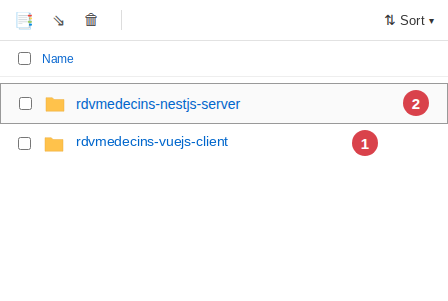
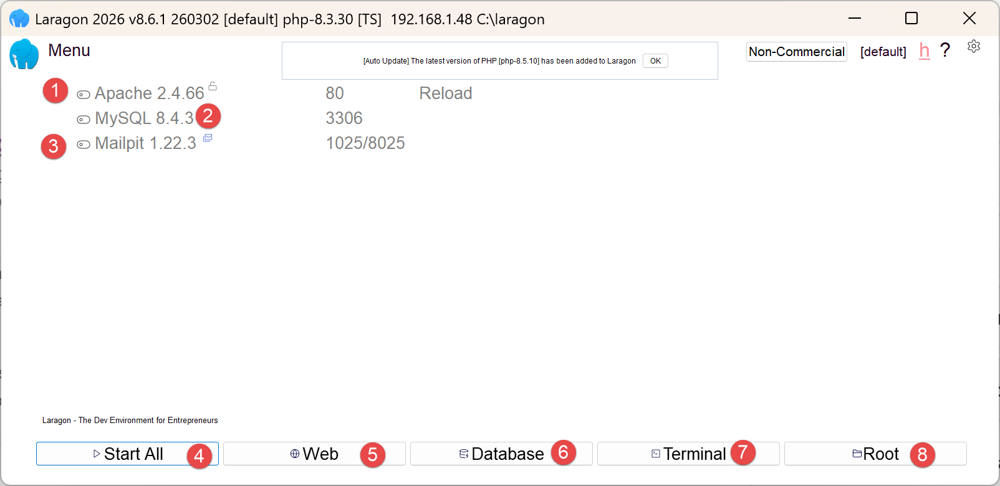
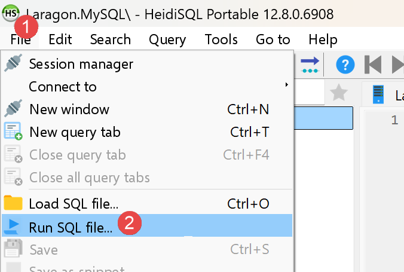
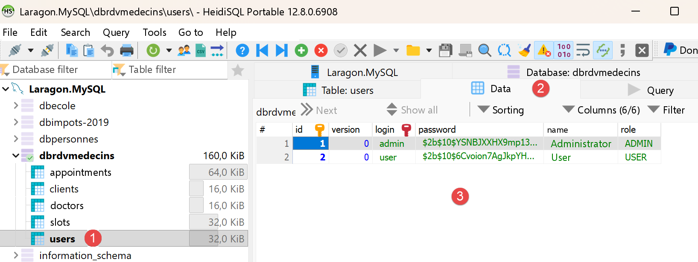
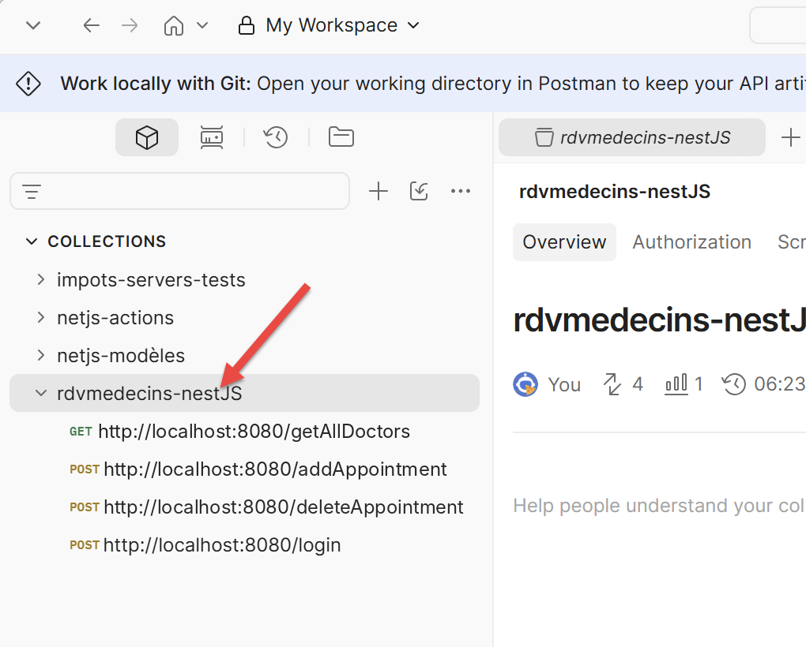
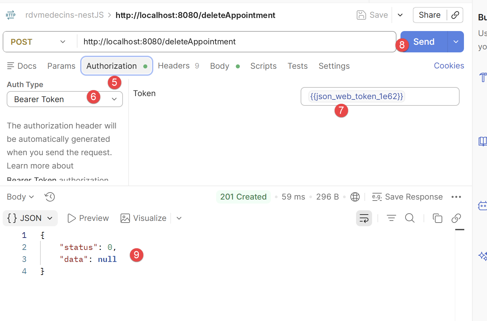

2. Capítulo 1 - Configuração do ambiente de trabalho
2.1. Instalar as ferramentas
- Node.js: baixe e instale a versão 22 (ou posterior) em nodejs.org. Verifique a instalação em um terminal:
- Visual Studio Code (VSCode): disponível para download gratuito em code.visualstudio.com. Instale a extensão “TypeScript and JavaScript Language Features” (geralmente já incluída).
- CLI do [NestJS], instalada uma única vez (no lado do cliente, o [Vite] não requer nenhuma instalação global — veja a introdução). Em um terminal do VSCode:
- [MySQL] 8: instale, por exemplo, com o XAMPP, Laragon (no Windows) ou diretamente com o [MySQL] Community Server. Uma ferramenta gráfica de administração (phpMyAdmin, [MySQL] Workbench, DBeaver, HeidiSQL…) facilita o trabalho. Daqui em diante, usa-se a ferramenta Laragon.
- Postman: disponível para download gratuito em postman.com.
Se você baixou o código, ele está em duas pastas:

- em [1], o cliente [Vue.js];
- em [2], o servidor [NestJS];
Abra a pasta [2] com o Visual Studio [File / Open Folder]:

2.2. Criar o banco de dados
Para criar o banco de dados [MySQL] usado pelo servidor [NestJS], usaremos a ferramenta Laragon. Em setembro de 2026, o Laragon está disponível na URL [Download Laragon – Fast & Modern Dev Environment ]. O Laragon inclui ferramentas que permitem instalar um servidor PHP e os servidores SGBD e [MySQL]:

- em [1], um servidor web Apache;
- em [2], o SGBD [MySQL];
- em [3], uma ferramenta de mensageria que não usaremos;
- [4] inicia todos os serviços (Apache, [MySQL], MailPit);
- [5] exibe a página web da URL [http://localhost]. Por padrão, essa URL refere-se à pasta <laragon-install>\www, em que <laragon-install> é a pasta de instalação do Laragon;
- em [6], inicia a ferramenta HeidiSQL, que permite gerenciar bancos de dados MySQL. Usaremos essa ferramenta para criar o banco de dados usado pelo servidor [NestJS];
- Em [7], abre um terminal; todos os binários necessários ao Laragon estão no PATH;
- Em [8], abre uma janela do Windows Explorer na pasta associada à URL [http://localhost];
A pasta de instalação do Laragon contém os seguintes itens:
 |
- Em [1], a pasta [bin] contém numerosos aplicativos:
 |
- Em [1], o servidor web Apache;
- em [2], um terminal de linha de comando;
- em [3], um cliente [git] que permite gerenciar as diferentes versões de um projeto;
- em [4], um gerenciador de banco de dados;
- em [5], um gerenciador de e-mail;
- em [6], o SGBD [MySQL];
- [7], outro servidor web;
- em [8], e [node.js] para executar scripts JavaScript;
- em [9], um editor de texto;
- em [10], o interpretador PHP;
- [11], o interpretador [Python];
- [12], um servidor de cache;
O Laragon vem com um ambiente de desenvolvimento completo. Neste curso, usaremos apenas o SGBD [MySQL], [6], e a ferramenta [heidisql] para gerenciá-lo graficamente;
Para criar o banco de dados [MySQL] necessário ao servidor [NestJS], proceda da seguinte forma:
 |
- Em [1], todos os serviços devem estar iniciados;
- Em [2], a opção [Database] permite gerenciar o banco de dados;
A opção [Database] inicia um utilitário chamado HeidiSQL:
 |
- Em [1], você pode escolher diversos SGBDs. O valor padrão fornecido é o SGBD MySQL. Ele serve;
- em [2], você faz login no HeidiSQL;
 |  |
- Em [1-2], execute o arquivo SQL e depois selecione o arquivo [dbrdvmedecins.sql], que está na pasta [rdvmedecins-nestjs-server/database]:

A execução do arquivo [3] criará o banco de dados [dbrdvmedecins] usado pelo servidor [NestJS]. Para vê-lo, pressione F5 no HeidiSQL para atualizar a exibição:

O banco de dados [dbrdvmedecins] foi criado. Você pode ver seu conteúdo:

- Em [1-3], a tabela [clients];
- [id] é a chave primária da tabela;
- [version] é o número de versão da linha. Esse número é incrementado a cada modificação da linha;
- [title, last_name, first_name] identificam a pessoa;

- em [1-3], a tabela [doctors];
- [id] é a chave primária da tabela;
- [version] é o número de versão da linha;
- [title, last_name, first_name] identificam a pessoa;

- Em [1-3], a tabela dos horários de consulta dos médicos:
- [id]: chave primária;
- [version]: número de versão da linha;
- [doctor_id]: chave estrangeira que referencia a chave primária do médico;
- [start_hour, start_minute]: hora e minutos do início da consulta. Assim, [8,20] significa 8h20.
- [end_hour, end_minute]: hora e minutos do fim da consulta.

- Em [1-3], a tabela [appointments] das consultas agendadas;
- [id]: chave primária;
- [version]: número de versão;
- [day]: data da consulta;
- [slot_id]: chave estrangeira que referencia a chave primária do horário de consulta. Como um horário está ligado a um médico, sabemos qual médico atende essa consulta;
- [client_id]: chave estrangeira para o número (chave primária) do paciente que comparece à consulta;

- em [1-3], a tabela [users], que lista os usuários autorizados a usar a aplicação [NestJS];
- [id, version]: chave primária, número de versão;
- [login, password]: credenciais do usuário;
- [name]: nome do usuário;
- [role]: o papel do usuário. [ADMIN] tem acesso total. [USER] tem acesso somente leitura. Esse usuário pode ver a agenda de um médico, mas não pode agendar nem cancelar uma consulta;
2.3. Iniciar o servidor [NestJS] pela primeira vez
Na pasta [rdvmedecins-nestjs-server], digite os seguintes comandos em um terminal:
O arquivo [.env] define variáveis de ambiente:
Personalize o arquivo [.env] recém-criado de acordo com a sua instalação do [MySQL] (nome de usuário, senha, porta). Como a autenticação foi adicionada (veja o Capítulo 3), esse arquivo também contém uma chave chamada JWT_SECRET: o valor de exemplo serve para acompanhar este documento, mas deve ser substituído por uma cadeia aleatória única, de sua autoria, antes de qualquer uso real.
Inicie todos os serviços do Laragon [Start All], caso ainda não tenha feito isso.
Em seguida, inicie o servidor:
O console exibe, em ordem: a inicialização do módulo [NestJS], a lista das rotas expostas pelo controller e, por fim, a confirmação da inicialização:
Essa saída do console confirma que o servidor está de fato escutando na porta 8080 — exatamente a mesma porta do servidor Spring Boot do documento original, que foi escolhida deliberadamente por essa razão.
2.4. Testar o servidor com um navegador
Como a autenticação foi adicionada (Capítulo 3), todas as rotas do [RdvMedecinsController] exigem um token JWT válido: um navegador sozinho, portanto, não serve mais para testá-las diretamente. Por exemplo:
agora retorna um erro 401 Unauthorized sem token:

Esse é o comportamento esperado: essa resposta confirma que o servidor protege corretamente suas rotas. O Postman (próxima seção) é necessário para obter um token e usá-lo.
2.5. Testando o servidor [NestJS] com o Postman
A ferramenta Postman está disponível na URL [https://www.postman.com/downloads/]. Pode ser necessário criar uma conta.
Inicie todos os serviços do Laragon e depois abra o aplicativo desktop do Postman:
 |  |
- Em [1-2], crie uma requisição HTTP para consultar o servidor de gerenciamento de consultas dos médicos;
2.5.1. Fazer login e obter um token
- Crie uma nova requisição no Postman com o método POST, URL http://localhost:8080/login;
- Na aba [Body], selecione "raw", depois o formato JSON e digite: {"login": "admin", "password": "admin"} (ou "user/user" para testar o papel USER);
- Envie a requisição.

- em [1-2], a requisição POST para o servidor [NestJS] em execução na porta 8080;
- em [3-5], o corpo da requisição. Ele transmite ao servidor a cadeia JSON contendo as credenciais do usuário que tenta fazer login, neste caso admin/admin;
- em [6], a resposta do servidor;
- em [7], o token de autenticação que as requisições seguintes devem enviar ao servidor para indicar “já me autentiquei”;
Copie o valor de accessToken: esse é o token que você deve incluir agora em todas as requisições seguintes. No exemplo acima, o token a copiar é “eyJ...zoM” (sem as aspas).
2.5.2. Chamando uma rota protegida com o token
Para GET /getAllDoctors (ou qualquer outra rota do RdvMedecinsController), no Postman, na aba Authorization, selecione o tipo Bearer Token e cole o token copiado acima (o Postman adicionará então automaticamente o cabeçalho Authorization: Bearer <token>).

- em [1-2], a requisição enviada ao servidor. Ela solicita a lista de médicos do banco de dados;
- Em [3-5], a requisição deve enviar o token de autenticação. Em [4], selecione [Bearer Token], e em [5], cole o token de autenticação que você copiou antes;
- em [7], a resposta do servidor;
2.5.3. Testar as rotas POST (/addAppointment, /deleteAppointment)
Siga o mesmo procedimento acima (método POST, corpo JSON, Bearer Token), exatamente como o documento original usava a extensão do Chrome “Advanced Rest [Client]” para as mesmas rotas.
Nota: Você encontra as seguintes requisições do Postman na coleção [rdvmedecins-nestJS.postman_collection.json]:

No Postman, pressione Ctrl-0 para carregar a coleção:

- Clique em [1] para carregar a coleção e selecione o arquivo da coleção. Depois de carregada, a coleção exibe suas requisições:

Para testar /addAppointment com o token de uma conta ADMIN:
- Requisição do Postman, método POST, URL http://localhost:8080/addAppointment;
- Aba Authorization: Bearer Token, token do admin;
- Aba [Body], raw, JSON: {"day": "2026-09-13", "clientId": 1, "slotId": 5};
- Envie a requisição.

Você pode usar o HeidiSQL para verificar se uma consulta foi adicionada ao banco de dados:

Para testar /deleteAppointment, siga o mesmo procedimento com o corpo {"appointmentId": 2} (o ID da consulta a cancelar (8) acima).

- em [4], onde o número acima é a consulta a ser excluída;

- em [5-7], o token de autenticação;
- em [9], a resposta do servidor. [status=0] indica que a operação foi bem-sucedida. Você pode verificar isso com o HeidiSQL:

- em [3], a consulta nº 2 não existe mais;
Experimente: repita a mesma requisição /addAppointment usando o token da conta USER (user/user) em vez do token do admin: a resposta passa a ser 403 Forbidden, com a mensagem “role [USER] does not allow this action (required role: ADMIN)” — uma demonstração concreta do controle de acesso por papéis implementado no Capítulo 3.
2.6. Iniciar o cliente [Vue.js] pela primeira vez
Na pasta rdvmedecins-vuejs-client (o servidor [NestJS] deve ter sido iniciado antes):
Em seguida, abra http://localhost:4200 em um navegador: a tela de login aparece primeiro (veja o Capítulo 5).

- em [1], a URL do servidor que entrega a aplicação [Vue.js];
- [2], a URL do servidor [NestJS] que gerencia o banco de dados [dbrdvmedecins];
É importante entender que há aqui dois servidores web, um dos quais atua como cliente do outro.
Dois botões rotulados “FR” e “EN” no canto superior direito permitem alternar a interface para o francês, mesmo antes do login. Faça login com uma das duas contas de demonstração (admin/admin, acesso total, ou user/user, somente leitura) para acessar o restante da aplicação. O Capítulo 5 traz um guia detalhado de uso desse cliente, com capturas de tela para cada etapa.